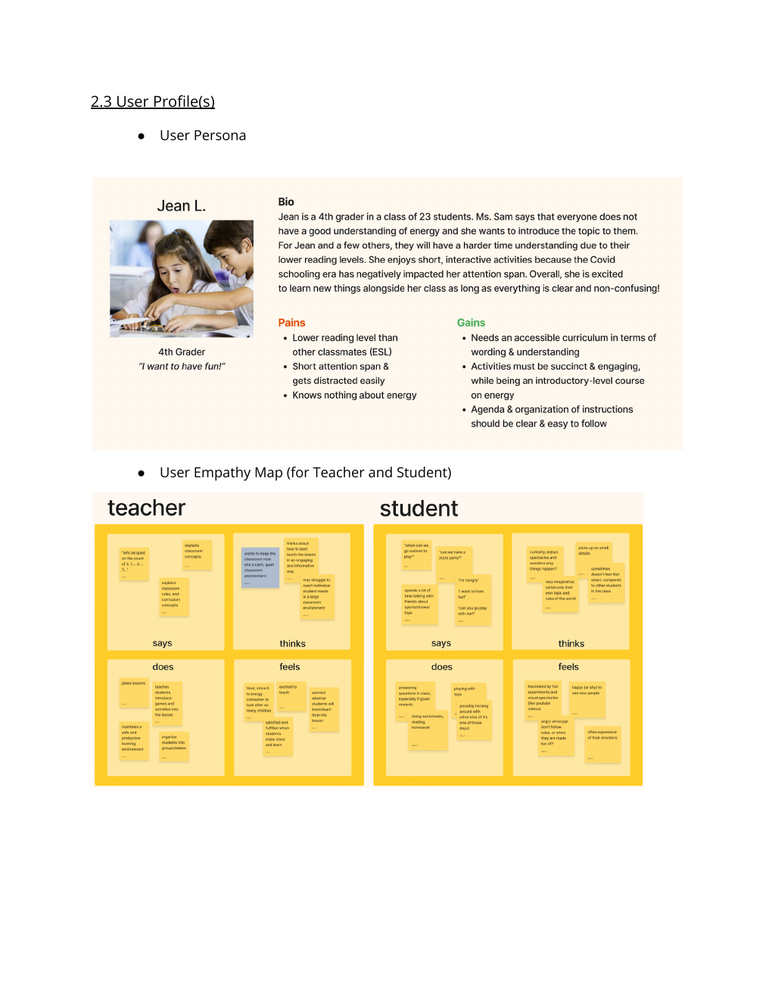

I turn complex problems into clear experiences.
I’m a Cognitive Design graduate focused on understanding people, simplifying workflows, and designing useful products. My work spans user research, human-centered design, interface design, process improvement, and AI-enabled systems.
Projects that show how I think.
Two different environments, one consistent approach: understand the people, make the complexity visible, and design around what actually matters.

HTE Project Design
A human-centered design project focused on making energy learning more engaging for fourth-grade students through interviews, personas, prototyping, and in-person testing.

Trinity — AI-Powered QMS
A mobile-first product concept that turns fragmented operational work into a centralized system for scheduling, documentation, analytics, personnel, equipment, and workflow management.
Research-minded. Systems-oriented.
My background in Cognitive Design gives me a foundation in human-centered design and interaction. My professional work has added a second lens: complex operations, process improvement, automation, and translating messy requirements into usable workflows.
I like working between research and implementation — not just identifying a problem, but helping turn the insight into something people can actually use.
Let’s build something useful.
Open to UX research, product design, and adjacent problem-solving roles.